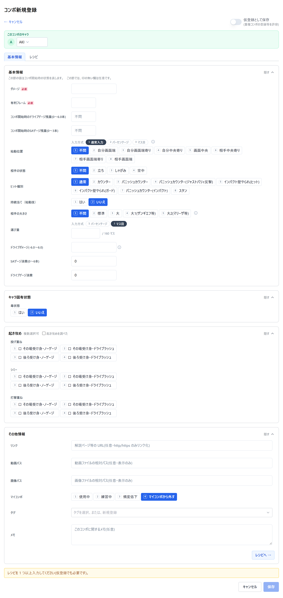

短く読めます。「何から始めるか」だけの道案内です。手が止まったら各節の下のリンクから操作説明書へ。気づいたこと・不満は何でも言ってください（怒りません）。
実行ファイルを書き込みできるフォルダに置いてダブルクリックします。ブラウザが自動で開きます。
Windows では通知領域にアイコンが常駐します。終わるときはそれを右クリックして「終了」です（タブを閉じても止まりません）。接続やトラブルは1 つ上のフォルダの README.txt へ。
いちばん最初だけ、言語・よく使うキャラクター・技の名前の出しかたなどを順に聞かれます。決めきれない項目は飛ばしてかまいません——あとから設定画面で全部変えられます。キャラクターや技のデータは最初から入っており、取り込み作業は要りません。
詰まったら → 操作説明書 第 1 章 初回起動ウィザード
コンボ一覧の右上の「新規登録」を押します。上の帯で選んでいるキャラクターが、そのまま登録先です。
レシピは技を選んで並べるだけで、1 つめに置いた技が始動技になります。ダメージと有利フレームさえ入れれば、ほかは埋まっていなくても保存できます——うろ覚えのコンボも、まだ試していないアイデアもそのまま置いておけます。ここまで来れば、あとは繰り返しです。

詰まったら → 操作説明書 第 8 章 コンボ登録・編集
記録が増えたら、コンボ一覧の絞り込みで目当ての 1 本まで絞ります。どれを使うか迷ったときは、「比較/エクスポート対象選択」を入れて何本か選び、「比較」へ。記録してある項目が縦に揃って並びます。
詰まったら → 操作説明書 第 5 章 コンボ一覧 ／ 第 10 章 コンボ比較
操作説明書は画面ごとに 1 章です。「この画面のこの欄は何？」に答えるための本なので、頭から読む必要はありません。
→ 操作説明書の目次